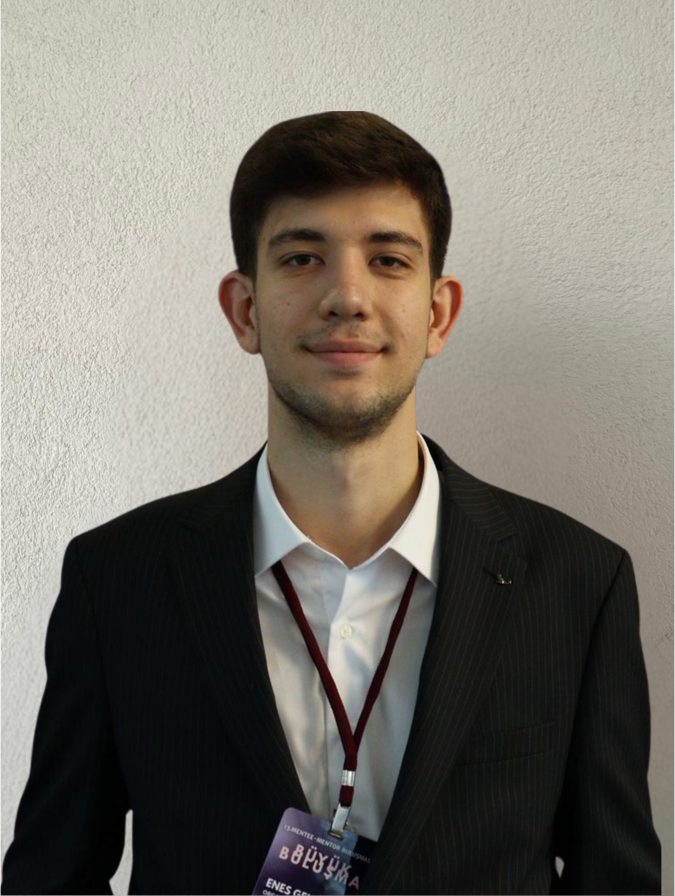

Yalnızca Bir Mentorluk Programı Değil; Yıllar Boyu Sürecek Güven Temelli Bir Topluluk.
Yüksek potansiyelli üniversite öğrencileri ile lider şirketler arasında güvene dayalı, uzun vadeli profesyonel ilişkiler kuran seçilmiş bir topluluk inşa ediyoruz. Mentorluk, şirket deneyimleri, gelişim içerikleri ve yaşayan alumni ağıyla tasarlanmış bütüncül gelişim yolculuğuna katıl.
Vizyonumuz, Misyonumuz ve Temel Felsefemiz
Programımızın merkezinde tekil etkinlikler değil, community (topluluk) yer alır. Amacımız kısa süreli bir deneyim sunmak değil; yıllar boyunca büyüyen güçlü bir profesyonel güven ekosistemi oluşturmaktır.
Güvene Dayalı, Uzun Vadeli Profesyonel İlişkiler
Yüksek potansiyelli üniversite öğrencileriyle yıllar boyunca devam edecek güven ilişkileri kurmasını sağlıyoruz.
- ✓ Öğrencilerin kariyer kararlarını bilinçli vermesini sağlamak
- ✓ İş dünyasını ve kurum kültürlerini içeriden tanıtmak
- ✓ Değer alan ve değer üreten paydaşları buluşturmak
Etkinlik Değil, Yaşayan Topluluk (Community)
Ürünümüz yalnızca bir mentorluk programı değildir. Mentorluk; şirket deneyimleri, topluluk etkileşimi, gelişim içerikleri ve alumni ağıyla birlikte tasarlanmış bütüncül bir profesyonel gelişim yolculuğunun temel araçlarından biridir.
- ✓ İşe alım başlamadan çok önce kurulan samimi bağ
- ✓ Kendi mentorunun yanı sıra tüm partner şirketlerle etkileşim
- ✓ Mezuniyet sonrasında da devam eden aktif ekosistem
Türkiye'den Dünyaya Ölçeklenen Ekosistem
Hedefimiz; üniversite öğrencileri, profesyoneller, alumni ve lider şirketleri aynı ekosistem içinde buluşturan, Türkiye'nin en güçlü profesyonel topluluklarından birini oluşturmaktır.
- ✓ Farklı üniversitelere ve sektörlere yayılan model
- ✓ Uluslararası ölçeklenebilir topluluk mimarisi
- ✓ Yıllar içinde büyüyen kuşağının referans ağı
NXT Ekosistemi Nasıl Çalışır?
Her dönem seçilmiş 24 üniversite öğrencisi ve 6–8 lider partner şirketle yürütülen 6 aylık gelişim süreci.
Seçilmiş 24 Öğrencilik Kohort
Topluluğa katılım herkes için açık değildir. Belirli değerlendirme süreçlerinden geçen, yüksek potansiyelli 24 üniversite öğrencisi dönem kohortuna kabul edilir.
1:1 Mentorluk Eşleşmesi
Her dönem 6–8 partner şirket programa 3–4 deneyimli çalışanını mentor olarak dahil eder. Her öğrenci bir mentorla birebir eşleşir ve ayda en az bir görüşme gerçekleştirir.
Tüm Şirketlerle Çapraz Deneyim
Öğrenciler 6 ay boyunca yalnızca kendi mentorlarıyla değil; programdaki tüm partner şirketlerle ziyaretler, vakalar ve buluşmalar aracılığıyla etkileşime geçer.
Mezuniyet & Alumni Topluluğu
6 aylık program sonunda katılımcılar mezun olur ve alumni topluluğuna katılarak mentorlarıyla ve ekosistemle bağlarını yıllar boyunca sürdürür.
6 Aylık Bütüncül Gelişim Yolculuğunda Neler Var?
Program boyunca tüm bileşenler birbirinden kopuk etkinlikler olarak değil, tek bir gelişim yolculuğunun birbirini tamamlayan parçaları olarak tasarlanır.
Birebir Mentorluk Görüşmeleri
Deneyimli bir profesyonelle birebir eşleşerek her ay en az bir kez gerçekleşen, kariyer hedeflerini ve kişisel gelişimini merkeze alan güven odaklı görüşmeler.
Şirket Ziyaretleri
Partner şirketlerin ofislerini ve çalışma ortamlarını ziyaret ederek farklı kurum kültürlerini, departman dinamiklerini ve günlük işleyişi içeriden gözlemleme imkânı.
Vaka Çalışmaları (Case Studies)
Partner şirketlerin gerçek iş dünyası problemleri ve senaryoları üzerinde kohort arkadaşlarınla birlikte çalışarak analitik düşünme ve problem çözme pratiği.
Liderlerle Buluşmalar
Sektöre yön veren yöneticiler ve liderlerle bir araya gelerek kariyer kırılma noktalarını, karar alma süreçlerini ve vizyonlarını doğrudan dinleme fırsatı.
Workshop ve Gelişim Oturumları
Profesyonel iletişim becerileri, öz farkındalık, kariyer planlama ve iş hayatına hazırlık konularında düzenlenen interaktif gelişim oturumları.
Networking & Topluluk Buluşmaları
Yalnızca kendi mentorunla değil; tüm partner şirket temsilcileri, diğer mentorlar, kohort arkadaşların ve alumni üyeleriyle güven bağları kurduğun buluşmalar.
Öğrenciler İçin Sağlanan Değer ve Topluluk Yaklaşımımız
NXT, katılımcılarına yalnızca bilgi değil; kariyerleri boyunca yanlarında taşıyacakları güvenilir bir insan ağı kazandırır.
Program Sonunda Neler Kazanırsın?
6 aylık yolculuğu tamamlayan her katılımcı şu somut kazanımlarla mezun olur:
NXT Mezun Profili
Programdan mezun olan ve alumni ağına katılan bir NXT katılımcısını tanımlayan 9 temel özellik:
Bilinçli Kariyer Kararları
Farklı sektörleri ve rolleri tanıdığı için kariyer kararlarını kulaktan dolma bilgilerle değil, bilinçli şekilde verebilir.
Güçlü Profesyonel İlişkiler
Kısa vadeli tanışıklıklar yerine güvene dayalı, uzun soluklu profesyonel ilişkiler kurabilir ve sürdürebilir.
İş Dünyasını İçeriden Tanıma
Kurumsal dünyayı yalnızca dışarıdan izlemez; karar mekanizmalarını ve işleyişi içeriden tanır.
Çoklu Şirket Kültürü Deneyimi
Programdaki partner şirketlerle kurduğu temaslar sayesinde farklı şirket kültürlerini bizzat deneyimlemiştir.
Profesyonel İletişim Becerisi
Liderlerle, mentorlarla ve akranlarıyla kurduğu etkileşimlerle profesyonel iletişim becerileri üst seviyeye gelişmiştir.
Güvenilir ve Sorumluluk Sahibi
Üstlendiği çalışmalarda ve ilişkilerde güvenilir, öz disiplini yüksek ve sorumluluk sahibi bir profesyonel olarak hareket eder.
Güçlü Mentor ve Alumni Ağı
Mezuniyet sonrasında da her ihtiyaç duyduğunda danışabileceği güçlü bir mentor ve alumni ağına sahiptir.
Topluluğa Katkı Bilinci
Yalnızca bireysel fayda sağlamayı değil; içinde bulunduğu topluluğa ve yeni dönem üyelere katkı vermeyi benimsemiştir.
Gelişim Odaklı Bakış Açısı
Geri bildirime ve öğrenmeye açık, kendini sürekli yenileyen gelişim odaklı bir bakış açısı kazanmıştır.
NXT Öğrenci (Fellow) Başvuru Formu
Yeni dönem 6 aylık gelişim yolculuğuna ve topluluğumuza katılmak için başvurunu ilet. Tüm başvurular değerlendirme komitemiz tarafından titizlikle incelenmektedir.
Sponsor Değil, Seçilmiş Bir Yetenek Topluluğunun Aktif Paydaşı Olun.
Yüksek potansiyelli üniversite öğrencileriyle işe alım başlamadan çok önce güvene dayalı bağ kurun. İşveren markanızı reklam yerine gerçek insan ilişkileriyle güçlendirin ve genç yetenekleri anlamlandırılmış içgörülerle tanıyın.
Şirketler İçin Sağlanan Değer
Partner şirketler program sayesinde genç yeteneklerle tek seferlik etkinliklerde değil; 6 ay süren ve mezuniyet sonrasında da yaşayan organik bir topluluk içinde buluşur.
Erken Dönemde Güven İlişkisi
Yüksek potansiyelli öğrencilerle henüz işe alım süreçleri başlamadan çok önce, samimi ve güvene dayalı profesyonel ilişkiler kurar.
İnsan İlişkileriyle İşveren Markası
İşveren markasını tek yönlü reklam kampanyaları yerine gerçek insan ilişkileri, birebir temas ve deneyimlerle güçlendirir.
Doğal Marka Temsilcileri
Programa mentor olarak dahil ettiği deneyimli çalışanlarını genç yetenekler nezdinde şirketin doğal marka temsilcilerine dönüştürür.
Samimi Kültür Aktarımı
Şirket kültürünü, çalışma değerlerini ve vizyonunu kurumsal bültenlerle değil, samimi ve organik biçimde gençlere aktarır.
Uzun Vadeli Yetenek Havuzu
Erken yetenek havuzunu yalnızca açık pozisyon dönemlerinde değil, uzun vadeli ve nitelikli bir topluluk olarak oluşturur.
Doğal Ortamda Tanıma Fırsatı
İşe alım öncesinde adayları mülakat stresinden uzak; vaka çalışmaları, ziyaretler ve topluluk etkileşimleri içinde doğal ortamlarında tanır.
Düzenli Geri Bildirim & İçgörü
Öğrencilerden düzenli geri bildirim ve içgörü elde ederek employer branding (işveren markası) çalışmalarını somut verilerle geliştirir.
Yıl Boyu Kesintisiz Temas
Yalnızca işe alım dönemlerinde değil; 6 aylık program ve devam eden alumni ağı sayesinde yıl boyunca genç yeteneklerle temas halinde kalır.
Partner Şirketler Sürece Nasıl Dahil Olur?
6 aylık dönem boyunca hem birebir mentorluk hem de tüm kohortu kapsayan bütüncül şirket deneyimleri birlikte yürütülür.
3–4 Deneyimli Çalışan ile 1:1 Eşleşme
Her dönem programa katılan 6–8 partner şirketin her biri, 3–4 deneyimli çalışanını mentor olarak sürece dahil eder. Her öğrenci bir mentor ile birebir eşleşir ve 6 ay boyunca ayda en az bir mentorluk görüşmesi gerçekleştirir.
Tüm Kohortla Şirket Deneyimleri
Öğrenciler yalnızca kendi mentorlarıyla değil, programdaki tüm partner şirketlerle etkileşime geçer. Şirket ziyaretleri, gerçek vaka çalışmaları, liderlerle buluşmalar, workshoplar ve networking etkinlikleri tek bir yolculuğun parçaları olarak uygulanır.
Alumni Ağı & Dönem Sonu Etki Analizi
6 aylık program sonunda katılımcılar mezun olarak yaşayan alumni topluluğuna katılır ve şirketlerle bağlarını sürdürür. Partner şirketlere dönem sonunda özel Stratejik Etki ve İçgörü Raporu sunulur.
Veri ve İçgörü Yaklaşımımız
Topluluğumuz büyüdükçe en değerli çıktılarımızdan biri yalnızca kurduğumuz ilişkiler değil, bu ilişkilerden doğan stratejik içgörülerdir.
İşveren Markası İçgörüleri
Program süresince öğrencilerin partner şirketlerle kurduğu etkileşimler sayesinde şirketlerin işveren markası algısı düzenli olarak ölçülür. Böylece yalnızca "Kaç öğrenciye ulaştık?" sorusunun değil, "Öğrenciler bizi gerçekten nasıl görüyor?" sorusunun da cevabı alınır.
- ✦ Öğrencilerin şirket hakkındaki ilk izlenimleri ile program sonundaki algılarının karşılaştırılması
- ✦ Hangi şirket deneyimlerinin güven oluşturduğunun tespiti
- ✦ İşveren markası iletişiminde hangi alanlarda gelişim gerektiğinin analizi
Erken Yetenek İçgörüleri
Program, yüksek potansiyelli öğrencilerin kariyer tercihlerini, beklentilerini ve motivasyonlarını gözlemleyebilmek için benzersiz bir ortam sunar. Bu içgörüler işe alım stratejilerinden employer branding çalışmalarına kadar bilinçli kararlar alınmasını sağlar.
- ✦ Gençlerin hangi alanlara yöneldiği ve hangi departmanlara ilgi duyduğu
- ✦ Kariyer seçimlerinde hangi kriterleri önceliklendirdiği
- ✦ İş hayatına dair beklentilerinin nasıl değiştiği ve hangi yetkinlikleri geliştirmek istediği
Mentor Etki Analizi
Bugüne kadar birçok kurum mentorluk programlarının gerçek etkisini ölçmekte zorlanmaktadır. NXT, mentorların programa katkısını yalnızca katılım oranlarıyla değil; çok boyutlu gelişim çıktılarıyla analiz eder.
- ✦ Mentorların öğrenciler üzerindeki gelişim katkısı ve etki düzeyi
- ✦ Görüşme sürekliliği ve nitelikli geri bildirim analizleri
- ✦ Çalışan deneyimini güçlendirme ve şirket içi mentor havuzunu bilinçli geliştirme imkânı
Topluluk İçgörüleri
Topluluğumuz yalnızca öğrencilerin değil, şirketlerin de sürekli öğrenmesini sağlayan yaşayan bir ekosistemdir. Elde edilen anonim verilerle partner şirketler her yıl genç yetenek stratejilerini geliştirebilir.
- ✦ Hangi etkinliklerin ve şirket deneyimlerinin daha yüksek etki ve güçlü bağ oluşturduğu
- ✦ Öğrencilerin hangi gelişim içeriklerine daha fazla ilgi gösterdiği
- ✦ Hangi sektörlerin ve iş alanlarının gençler tarafından daha fazla merak edildiği
Dönem Sonu Partner Etki Raporları
Her program sonunda partner şirketlere özel hazırlanan etki raporları, yalnızca gerçekleşen faaliyetleri değil; programın şirket üzerindeki gerçek etkisini ortaya koyar.
Faaliyet Özeti Değil, Stratejik Karar Dokümanı
6 aylık dönem tamamlandığında her partner kurumumuza, topluluk içindeki etkileşimlerin ve algı ölçümlerinin sentezlendiği kapsamlı bir değerlendirme dokümanı sunuyoruz.
| Değerlendirme Boyutu | Klasik Kariyer Etkinlikleri | Standart Mentorluk Programları | NXT Topluluk & Partnerlik Ekosistemi |
|---|---|---|---|
| Şirket Konumlandırması | Logo & Stant Sponsoru | Bireysel Gönüllü Katılımı | Topluluğun Aktif Paydaşı |
| Etkileşim Kapsamı | Kısa süreli, tekil etkinlik teması | Yalnızca 1:1 mentor-mentee görüşmesi | 1:1 Mentorluk + Tüm Kohortla Şirket Deneyimleri |
| İşveren Markası Etkisi | Tanıtım ve reklam odaklı | Ölçülemeyen bireysel etki | Gerçek İnsan İlişkileri & Algı Değişim Analizi |
| Veri ve İçgörü Çıktısı | Yalnızca katılımcı sayısı | Görüşme sayısı takibi | Anonim Karar Destek İçgörüleri & Stratejik Etki Raporu |
| İlişki Sürekliliği | Etkinlik bittiğinde sona erer | Dönem sonunda kopan bağlar | 6 Ay Program + Yıllar Boyu Yaşayan Alumni Ağı |
Stratejik Yaklaşımımız ve Uzun Vadeli Vizyonumuz
Güven üzerine inşa edilmiş ilişki ağı ve bu ağın ürettiği yüksek kaliteli içgörülerle Türkiye'nin erken kariyer ekosistemine referans oluşturuyoruz.
Stratejik Yaklaşımımız
Bizim amacımız veri toplamak değildir. Amacımız, güvene dayalı ilişkiler kuran bir topluluk içerisinde oluşan deneyimleri anlamlandırarak şirketlerin genç yeteneklerle daha güçlü ilişkiler kurmasına yardımcı olmaktır.
Topluluğumuz büyüdükçe en değerli varlığımız veri değil; güven üzerine inşa edilmiş ilişki ağı ve bu ağın ürettiği yüksek kaliteli içgörüler olacaktır. Bu nedenle veri, hiçbir zaman ticari bir ürün olarak değil; partner şirketlerin daha bilinçli kararlar almasını sağlayan stratejik bir değer olarak konumlandırılmaktadır.
Uzun Vadeli Vizyonumuz
Topluluğumuz büyüdükçe oluşacak bilgi birikimi, Türkiye'nin erken kariyer ekosistemine ilişkin en nitelikli referans kaynaklarından biri hâline gelecektir.
Farklı sektörlerden lider şirketler, binlerce öğrenci, yüzlerce mentor ve yıllar içinde oluşan alumni ağı sayesinde; genç yeteneklerin beklentilerini, kariyer eğilimlerini ve şirketlerle kurdukları ilişkileri anlamaya yönelik benzersiz bir ekosistem inşa ediyor ve bu modeli farklı üniversitelere, sektörlere ve ülkelere ölçeklemeyi hedefliyoruz.
Yeni Dönemin 6–8 Partner Şirketinden Biri Olun.
Yüksek potansiyelli genç yeteneklerle işe alım öncesinde güvene dayalı bağ kurmak, çalışanlarınızı doğal marka elçilerine dönüştürmek ve dönem sonu stratejik içgörü raporlarıyla erken yetenek stratejinizi güçlendirmek için tanışma toplantısı planlayalım.
NXT — Network X Talent | İletişim: nxt.kurumsal@gmail.com
Kurumsal Partnerlik & Tanışma Formu
Kurum bilgilerinizi bırakın; yeni dönem kohort yapısını ve partnerlik detaylarını görüşmek üzere sizinle iletişime geçelim.
Neden NXT'yi Kurduk?
Bizler, Türkiye'nin önde gelen üniversitelerinde kariyer kulüplerini ve devasa öğrenci zirvelerini yönetmiş bir ekibiz. Yüzlerce şirketi ve binlerce öğrenciyi tek günlük fuarlarda, sponsorluk odaklı zirvelerde ve salon etkinliklerinde bir araya getirdik.
Ancak zamanla şu gerçeği fark ettik: Binlerce kişinin katıldığı bir salonda gerçek güven bağları kurulmuyor. Öğrenciler şirket kültürlerini tek günlük bir reklam sunumundan anlayamıyor; şirketler de yetenekleri CV yığınları arasında gerçekten tanıyamıyor.
İşte NXT (Network X Talent) bu yüzden doğdu. Biz; kısa süreli etkinlik sponsorluklarını değil, uzun vadeli profesyonel ilişki ağını inşa etmek istiyoruz. Güvene, birebir temasa ve çapraz mentorluğa dayalı, hem öğrencinin hem de şirketin gerçekten değer ürettiği seçilmiş bir ekosistem kuruyoruz.
Arkamızda Kimler Var?
Boğaziçi Üniversitesi ve Yıldız Teknik Üniversitesi ekosistemlerinden gelen, operasyon tecrübesine sahip kurucu ekibimiz.
Emir Çanakkale
Sümeyye Tezcan

Enes Gençoğlu
Sıkça Sorulan Sorular
Programa başvuru, katılım şartları ve süreçlerle ilgili tüm detaylar.
Programa başvurmak ve katılmak ücretli mi?
Öğrenciler için değerlendirme süreci nasıl işliyor?
Birebir (1:1) Mentorluk eşleşmeleri neye göre yapılıyor?
Program üniversite derslerimle veya stajımla çakışır mı?
Şirketler için katılım şartları ve beklentiler nelerdir?
Partner Şirketler ekosistemden hangi verileri elde ediyor?
Mezuniyet sonrası (Alumni) süreci nasıl işliyor?
Partnerlerimiz & Mentorlarımız
Çok Yakında Açıklanacak!
İlk dönem partner şirketlerimiz ve mentor kadromuz ile ilgili resmi kurumsal görüşmelerimiz devam ediyor. Güven ağına katılan ilk lider markalar çok yakında burada duyurulacaktır.
NXT Portal'a Giriş
Öğrenci (Fellow) veya Mentor hesabınızla devam edin.